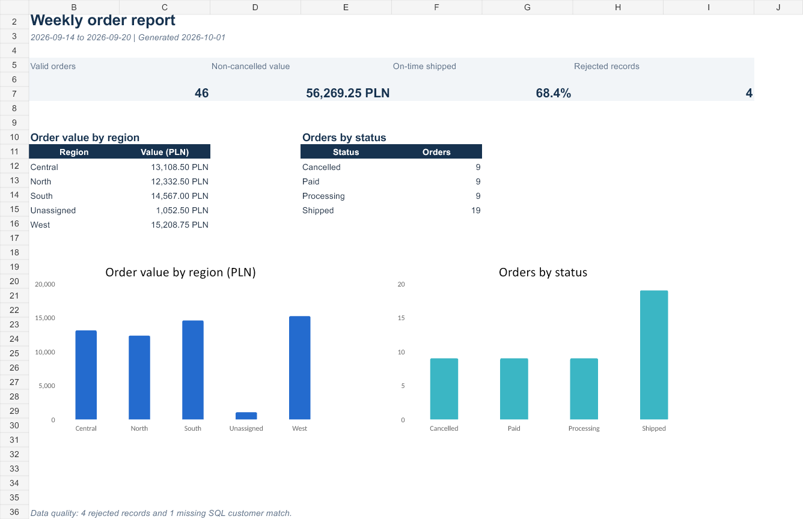
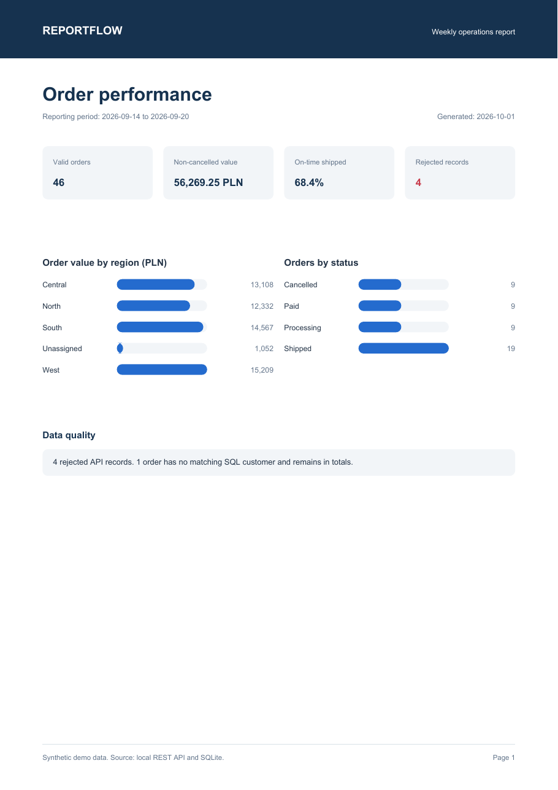

System zarządzania jakością
Narzędzie dla międzynarodowej firmy z branży laboratoryjnej obsługiwało proces w systemie bez odpowiedniego API i pracowało na tysiącach rekordów.
Programista · Wrocław
Interesuje mnie oprogramowanie, które ma konkretny rezultat: porządkuje dane, usuwa ręczną pracę albo ułatwia korzystanie z procesu.
02
Nazywam się Maksymilian Kubiak. Tworzę oprogramowanie od małych narzędzi usprawniających pracę po integracje kilku systemów.
Najwięcej doświadczenia mam w Pythonie, automatyzacji procesów, przetwarzaniu danych, REST API, SQL oraz generowaniu raportów.
Narzędzie dla międzynarodowej firmy z branży laboratoryjnej obsługiwało proces w systemie bez odpowiedniego API i pracowało na tysiącach rekordów.
Aplikacja prezentująca dane z istniejącej bazy SQL dla dużego polskiego producenta z branży spożywczej, wykonana przez pośrednika.
Opisy są anonimowe. Nie publikuję kodu, danych ani zrzutów z systemów klientów.
03


Pipeline raportowy dla fikcyjnej hurtowni B2B. Pobiera zamówienia z paginowanego API, waliduje rekordy, łączy dane klientów z SQLite i generuje raport PDF oraz skoroszyt Excel.
Masz pomysł, projekt albo proces do usprawnienia?
Przejdź do kontaktu